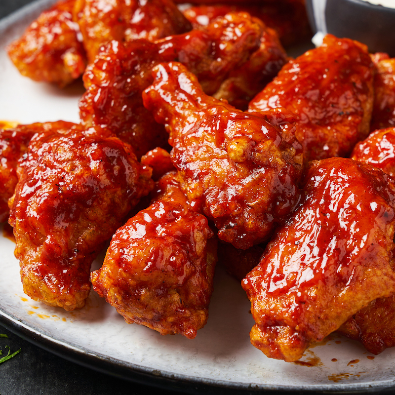

Chicken Buffalo

Description
This is the famous Chicken Buffalo Wings, a savoury fried chicken
coated with sweet, buffalo wings sauce. Chicken Buffalo Wings is a delicacy all around the globe,
from the Oriental Countries all the way to Western Societies.
Ingredients
- Chicken
- Flour
- Egg
- Brown Sugar
- Ketchup
- Cooking Oil
- Butter
- Oyster Sauce
Steps
- Wash the chicken
- Beat the egg
- Coat the chicken with the beaten egg
- Coat the chicken with the flour
- Heat up the frying pan and place the cooking oil
- Fry the chicken until golden brown
- Repeat steps 3 to 5 until you fried all the chicken
- Let the chicken rest for 15 minutes
- Heat up another frying pan and melt the butter within
- Place the appropriate amount of ketchup in the pan
- Put the tablespoon of brown sugar
- Mix the Oyter Sauce
- Mix the sauce until the desired consistency is achieved
- Turn off the stove
- Place the fried chicken in the pan and coat with the sauce
- Enjoy your Chicken Buffalo